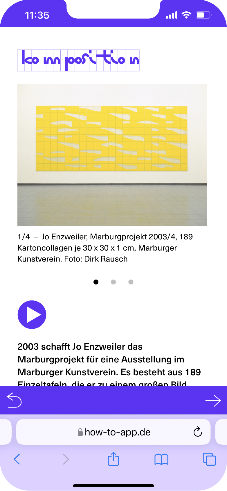
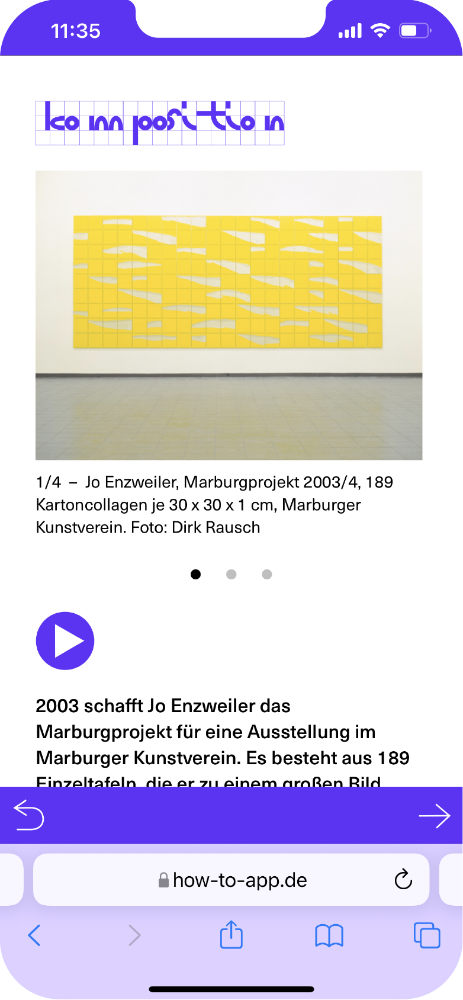
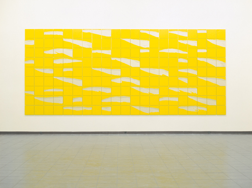

komposition
 

Das Spiel Komposition fragt nach dem Klang eines Bildes. Was passiert, wenn man ein Blatt Papier
oder einen Karton zerreißt? Welche Anmutung hat ein Riss? Welche Schichten werden freigelegt?
Woran erinnert diese Silhouette? Was haben Farben mit Tönen zu tun? Wie klingt ein Gelb, ein Grau,
ein Weiß? Wie klingen sie zusammen? Und wann entsteht aus einer Anordnung und einer Abfolge eine
Komposition?
werk
2003 schafft Jo Enzweiler das Marburgprojekt für eine Ausstellung im Marburger Kunstverein. Es besteht aus
189 Einzeltafeln, die er zu einem großen Bild zusammenfügt.
Betrachtest du das Marburgprojekt, nimmst du wahrscheinlich zunächst ein sehr großes leuchtend gelbes Bild
wahr. Schaust du genauer, wirst du erkennen, dass sich dein Eindruck aus vielen einzelnen kleinen,
quadratischen Tafeln zusammensetzt. Jo Enzweiler nennt diese Bilder Karton-Collagen. Sie nehmen eine sehr
wichtige Stellung in seinem gesamten künstlerischen Schaffen ein.
Zunächst nimmt er ein quadratisches Stück gelb bedruckten Kartons in die Hand und reißt es in zwei Hälften. Beim Reißen entstehen vielschichtige graue Tönungen und feine Strukturen, die du mit den Fingern ertasten kannst. Vielleicht denkst du beim Betrachten der Risskanten an ein Gebirge oder an die Horizontlinie, wenn du aufs Meer hinaus schaust. Vielleicht siehst Du darin aber auch die Bewegung, die durch das Reißen entsteht. Sie kann langsam und vorsichtig oder schnell und bestimmt sein. Zu Beginn seiner Arbeiten mit gerissenen Karton, hat Enzweiler sich dagegen gewehrt, wenn Betrachter seine Karton-Collagen mit Landschaften verglichen haben. Er erinnert sich:
»Es war für mich zunächst eine schmerzliche Erfahrung und ich habe gesagt: ›Das ist für mich keine Landschaft, sondern das ist für mich ein gerissener Karton, mit dem ich Flächen und Räume darstellen kann‹.« Als der Künstler für sich selbst erkannt hat, dass in seinen Karton-Collagen auch landschaftliche Deutungen gesehen werden können, hat das seine Kunst grundlegend beeinflusst. Er schreibt: »So hat sich für mich die Bilderwelt automatisch ganz stark erweitert und der Umgang mit diesem wunderbaren Thema fiel so leicht und so einfach und erfüllte meine Arbeit.«
Im Marburgprojekt reiht der Künstler viele dieser Bilder neben und übereinander an. Zum Teil wandern die Rissspuren von einem Bild zum nächsten. Oder Du erkennst darin Töne und Musik, wie der Musiker Theo Brandmüller (1948–2012) bei einer späteren Präsentation des Werkes in der Saarbrücker Ludwigskirche. Wenn in seiner Orgelimprovisation etwa ein heller, langgezogener Ton hervorsticht: Klingt das nicht irgendwie... gelb?
Das Marburgprojekt ist inzwischen Teil der Kunstsammlung des Saarländischen Landtages und ist dort für alle Angestellten, Abgeordneten und Besucher des Hauses täglich zu sehen.
Zunächst nimmt er ein quadratisches Stück gelb bedruckten Kartons in die Hand und reißt es in zwei Hälften. Beim Reißen entstehen vielschichtige graue Tönungen und feine Strukturen, die du mit den Fingern ertasten kannst. Vielleicht denkst du beim Betrachten der Risskanten an ein Gebirge oder an die Horizontlinie, wenn du aufs Meer hinaus schaust. Vielleicht siehst Du darin aber auch die Bewegung, die durch das Reißen entsteht. Sie kann langsam und vorsichtig oder schnell und bestimmt sein. Zu Beginn seiner Arbeiten mit gerissenen Karton, hat Enzweiler sich dagegen gewehrt, wenn Betrachter seine Karton-Collagen mit Landschaften verglichen haben. Er erinnert sich:
»Es war für mich zunächst eine schmerzliche Erfahrung und ich habe gesagt: ›Das ist für mich keine Landschaft, sondern das ist für mich ein gerissener Karton, mit dem ich Flächen und Räume darstellen kann‹.« Als der Künstler für sich selbst erkannt hat, dass in seinen Karton-Collagen auch landschaftliche Deutungen gesehen werden können, hat das seine Kunst grundlegend beeinflusst. Er schreibt: »So hat sich für mich die Bilderwelt automatisch ganz stark erweitert und der Umgang mit diesem wunderbaren Thema fiel so leicht und so einfach und erfüllte meine Arbeit.«
Im Marburgprojekt reiht der Künstler viele dieser Bilder neben und übereinander an. Zum Teil wandern die Rissspuren von einem Bild zum nächsten. Oder Du erkennst darin Töne und Musik, wie der Musiker Theo Brandmüller (1948–2012) bei einer späteren Präsentation des Werkes in der Saarbrücker Ludwigskirche. Wenn in seiner Orgelimprovisation etwa ein heller, langgezogener Ton hervorsticht: Klingt das nicht irgendwie... gelb?
Das Marburgprojekt ist inzwischen Teil der Kunstsammlung des Saarländischen Landtages und ist dort für alle Angestellten, Abgeordneten und Besucher des Hauses täglich zu sehen.

Jo Enzweiler, Marburgprojekt 2003/4, 189 Kartoncollagen je 30 × 30 × 1 cm, Aufstellung in der Ludwigskirche Saarbrücken (Fotos: Carsten Clüsserath)
galerie